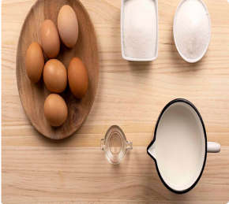
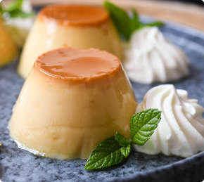

ИНГРЕДИЕНТЫ:
| Молоко | 0,5 л. |
| Сахар | 125 гр. |
| Яйца (среднего размера) | 3 шт. |
| Немного кожи лимона или апельсина | 1 шт. |
| Палочка корицы | 1 шт. |
ПРИГОТОВЛЕНИЕ:
-
1
Нагреваем молоко с корицей и кожей лимона. Когда начнет закипать, убираем с огня и даем остыть в течение 30 минут.
 -
2
Смешиваем яйца с сахаром, не спеша помешивая, но не взбиваем. Добавляем остывшее молоко и мешаем до тех пор, пока не растворится сахар. Процеживаем через сито, чтобы очистить от коры корицы и лимона.
ХИТРОСТИ ПРИ ПРИГОТОВЛЕНИИ ФЛАНА:Когда я только учился этому рецепту, у меня получался флан с трещинами на поверхности. Это может происходить по двум причинам. Или не залили воды в поднос, или приготовили крем миксером, таким образом в креме остается воздух. Не надо взбивать, перемешивайте все ингредиенты.
Не обязательно накрывать формочки фольгой, но нужно убедиться, чтобы вода не попала в крем.
-
3
Далее приготовим карамель. В кастрюлю поместим 4 столовых ложки сахара и такое же количество воды. На тихом огне доведем до кипения. Должна получится коричневая жидкость. Заливаем в формочки для флана, чтобы немного покрыть дно формочек. Затем неспеша заливаем наш крем. Формочки ставим на поднос с высокими бортами чтобы можно было залить водой, примерно с палец глубиной.
 -
4
Далее ставим поднос в духовку на 25-30 минут или пробуя ввести палочку и она должна выйти сухой. Если вы уверены, что флан готов, оставьте его немного остыть и далее в холодильник на 24 часа.
С ЧЕМ ЛУЧШЕ СОЧЕТАТЬ ФЛАН И КАК ПОДАВАТЬ:Флан можно подавать со сливками или с фруктами.